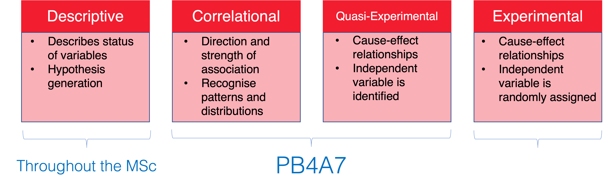
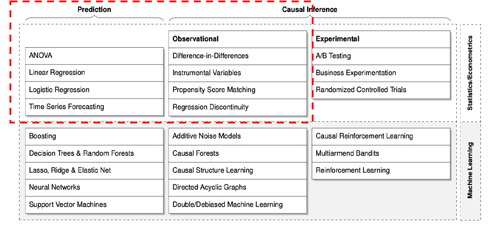
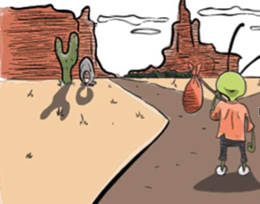
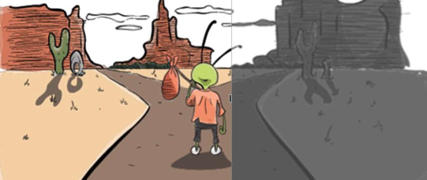
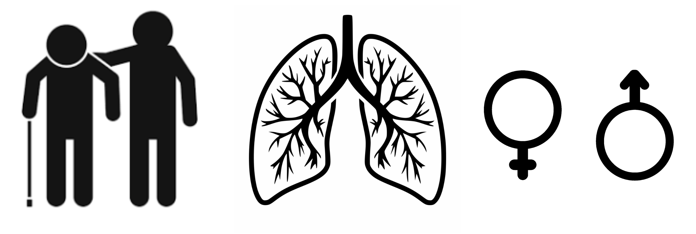
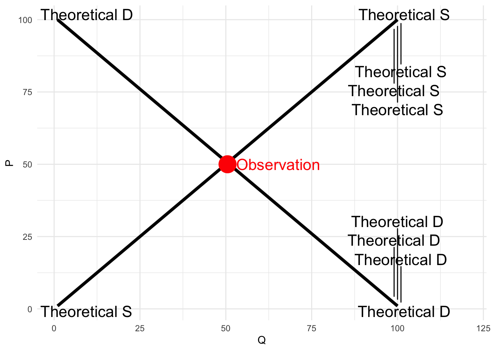
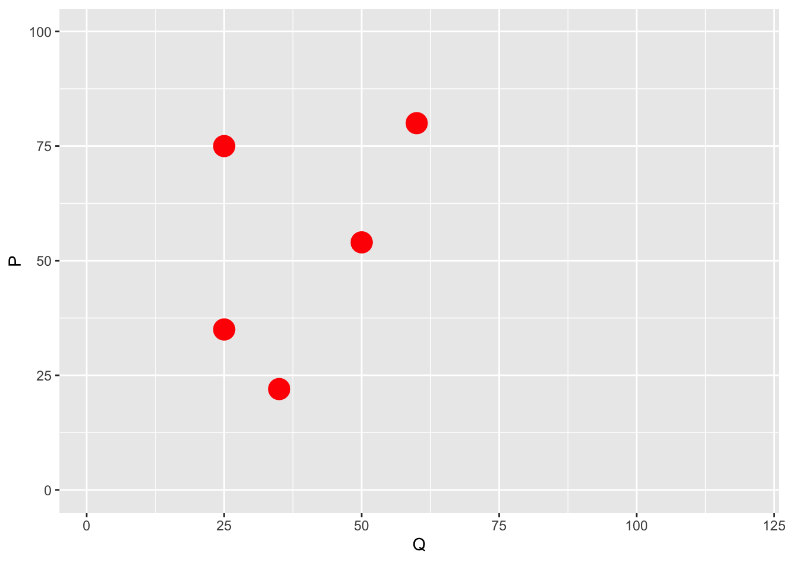
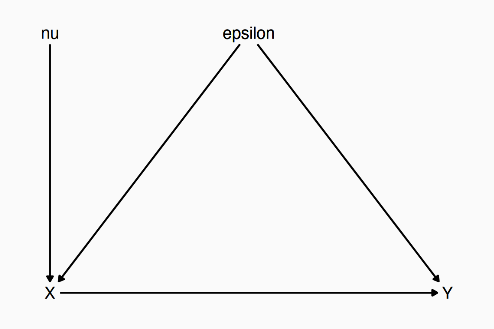
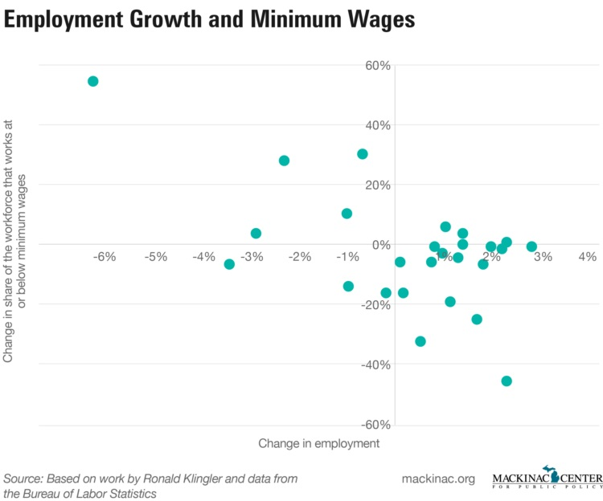
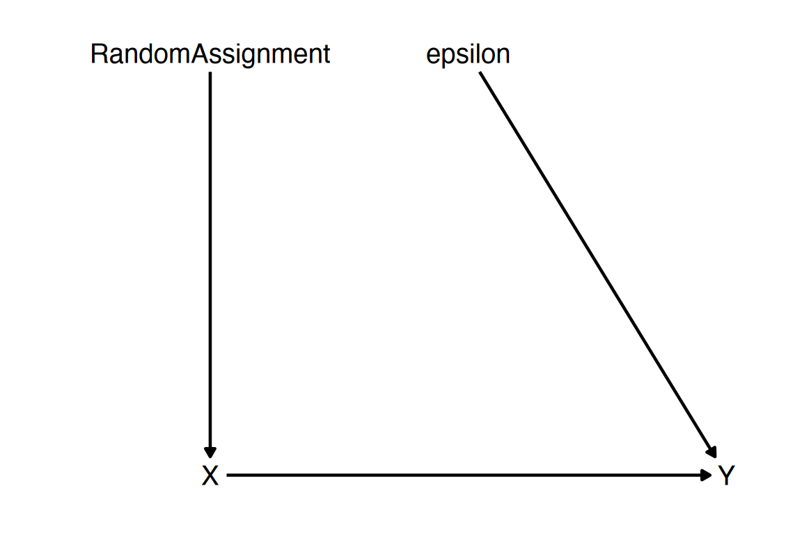

It’s a research design course on quasi-experimental methods
Let’s break it down:
Research Design -> How you transform an idea / question about the world to applied research
Quasi-Experiments -> Not by designing new experiments with random assignment. (how? We will see over the next 11 weeks)
What you should expect
Confidence: You will feel like you have a good understanding of design-based causal inference by the end such that it doesn’t feel mysterious or intimidating
Comprehension: You will have learned a lot both conceptually but also in various specifics, particularly with regards to issues around identification and estimation
Competency: You will have had some experience working together implementing these methods using code in Stata syntax
Lectures plan
Week 2 - Linear regressions
Week 3 - Hypothesis testing
Week 4 – Linear regressions with multiple regressors / Non-linear functions
Week 5 – Regressions on Binary variables
Week 6 – BREAK!!! (eeeehm Reading Week)
Week 7 – Recap & POTENTIAL OUTCOMES
Week 8 – Panel regressions
Week 9 – Regression Discontinuity Designs
Week 10 – Instrumental Variables
Week 11 – Difference in Differences
What is a good research question?
Coming up with questions is easy.
But coming up with good ones, is tricky. Good RQ:
What is a good research question?
Coming up with questions is easy.
But coming up with good ones, is tricky. Good RQ:
A question that can be answered / Researchable:
How can you answer a question which is unanswerable?
What versus why? Are you trying to determine what causes Y, or why something causes Y.
Improve our understanding of the world:
Doesn’t have to shake the foundations of science and human knowledge
What if I find an unexpected result?
Research Designs
Quantitative empirical analysis uses data to explore, test or estimate a relationship.

Research Designs
From a broad spectrum of methodologies, we will cover:

Causal Inference
Contemplating interventios that change behaviour:
How would littering parks change if we increase the severity of fines?
Is public shaming more effective?
What if we increase other types of fines (i.e. driving)?
Will people commit less crimes?
Each of these policies is asking what happens to some outcome if we make an intervention - keep everything the same but change one factor –
A little throwback to causal inference
A little throwback
October 2021’s Nobel Prize in economics went to D. Card, J. Angrist and G. Imbens
But it’s arguably as much to Princeton’s mid 1980s Industrial Relations group as it’s ground zero for the credibility revolution
Starts with Orley Ashenfelter, who had been working on job trainings programs
KEY individuals: Orley Ashenfelter, David Card (Orley’s student), Josh Angrist (Card and Orley’s student), Alan Krueger (hired by Orley), Bob Lalonde (Card and Orley’s student) and then a generation of students (Levine, Currie, Pischke)
A little throwback
Angrist started working on how randomization in Vietnam drafting can explain later outcomes (we will see this in Week 10)
Meets Gibens and they both get mentored by Gary Chamberlain
They propose the potential outcomes framework
This course is about these people, their ideas, subsequent development and how the revolutionised modern empirical research with observational data
Introduction to counterfactuals
Introduction to counterfactuals
Let’s do a little thought experiment
Introduction to counterfactuals
Let’s do a little thought experiment
Aliens come and orbit earth, in superposition.
They see sick people in hospitals
What do they? think?
Introduction to counterfactuals
Let’s do a little thought experiment
Aliens come and orbit earth, in superposition.
They see sick people in hospitals
What do they? think?
Hospitals kill people. What is the difference? Doctors?
They kill the doctors, unplug patients from machines, throw open the doors – many more patients inexplicably die
Sounds ridiculous?
Introduction to counterfactuals
Let’s do a little thought experiment
Aliens come and orbit earth, in superposition.
They see sick people in hospitals
What do they? think?
Hospitals kill people. What is the difference? Doctors?
They kill the doctors, unplug patients from machines, throw open the doors – many more patients inexplicably die
Sounds ridiculous?
Aren’t we all aliens in our research?
Three types of errors
Correlation =/= causation
Three types of errors
Correlation =/= causation
Something Happening first may not imply causality (rooster)
Three types of errors
Correlation =/= causation
Something Happening first may not imply causality (rooster)
No correlation does not imply no causation
Research Designs and Causality
Research Designs and Causality
Example: If we want to know whether a vaccine works
We compare people who have gotten vaccinated and those who took a placebo instead
Research Designs and Causality
Example: If we want to know whether a vaccine works
We compare people who have gotten vaccinated and those who took a placebo instead
In a classic clinical experiment, one applies a ‘treatment’ (0 = placebo, 1 = vaccine) to some set of n ‘subjects’ and observes some ‘outcome’ (Y).
We can then estimate:
Y = infection(0,1)
Research Designs and Causality
Each individual i is assigned into one of the treatment options (0 = placebo, 1 = vaccine)
Therefore, each i as two potential outcomes:
What would happen if they got the placebo? Yi (0)
What would happen if they got the vaccine? Yi (1)
Did vaccines prevent infection?
To answer this we need to know what happened to the individual if they got the vaccine and what happened to the same individual if they got the placebo.
Counterfactuals
What actually happened (i.e., the ‘factual’):
I got the vaccine and did not get sick
Treatment (X) = 1
Observed outcome = Yi(1)
The counterfactual: (what would have happened)
If I did not get the vaccine, would I have fallen sick?
Counterfactual treatment (X) = 0
Counterfactual outcome = Yi(0)
Counterfactuals
After treatment is assigned there is potential for only one outcome to be observed

Counterfactuals
But ideally we would like to observe two:

Fundamental Problem of Causal Inference
Once we observe one treatment for one individual, we cannot observe a different treatment for the same individual.
This is called the “fundamental problem of causal inference.” Each potential outcome is observable, but we can never observe all of them.” (Rubin, 2005, p. 323).
Then, why are we discussing all these?
Fundamental Problem of Causal Inference
Once we observe one treatment for one individual, we cannot observe a different treatment for the same individual.
This is called the “fundamental problem of causal inference.” Each potential outcome is observable, but we can never observe all of them.” (Rubin, 2005, p. 323).
Then, why are we discussing all these?
We can observe different treatments across different people.
This may be a way of solving the fundamental problem, but it introduces a new problem we must consider.
Selection Bias
This new problem arises because different people are… DIFFERENT!
Selection Bias
Differences between people following a treatment may be because of the treatment, or they may be because of the differences in the people being treated.
This is selection bias.
Let’s consider some other factors which may matter for selection bias.

Addressing Selection Bias
Select a large enough random sample and divide them into two groups.
Characteristics which contribute to selection bias should on average be distributed the same between both groups.
Therefore, we expect that the treatment and control groups should differ only because of the treatment, and in absence of the treatment, would produce the same results.
Addressing Selection Bias
Each group differs within the group…
But, on average, the groups themselves are the same, and so are comparable.
The effect of treatment on average would then be:
E(Y | T = 1) – E(Y | T = 0) = Average Treatment Effect (ATE)
Treatment effect
The effect of the intervention then would be:
Treatment effect of intervention = Outvome of Treated - Outcome of Untreated + Selection Bias
Selection bias is the difference in average outcomes between treatment and control groups due to factors other than the treatment status
The true treatment effect, selection bias needs to be eliminated, or shown to be reasonably assumed to be zero.
To eliminate selection bias, we need well designed experiments (Matteo’s class) and large enough samples
Experiments not always the solution
Time consuming and expensive
May have ethical issues
Require large samples for the assumptions to hold
Suffer from drop-out and non-compliance
Estimated parameters in an experiment may different from the parameters in which the intervention will actually take place.
Not very easy to observe ‘real’ behaviours or consequential behaviours because of the setting.
An interesting paper on the limits of RCTs from Deaton (Nobel laureate) and Cartwright (2017), if you’re interested!
What do we do then?
Causal inference
We design a strategy (Identification Strategy from now on) that allows us to:
Identify and isolate the random variation in treatment (i.e. a natural disaster)
Rely on institutional knowledge, theory and data to:
Reduce as much as possible Selection Bias
Identify outcomes for treated and untreated populations
Estimate average treatment effects
Data Generating Process
To avoid identification error, economists think closely about the data generating process
What is a data generating process?
The data generating process is the true set of laws that determine where our data comes from
For example, if you hold a rock and drop it, it falls to the floor
What is the data we observe? (Hold the rock & Rock is up) and (Let go & Rock is down)
What is the data generating process? Gravity makes the rock fall down when you drop it
Data Generating Process
Another example is a model of supply and demand
We observe prices and quantities in a competitive market
What led to those being the prices and quantities we see?
The supply and demand model and its equilibrium, we theorize!
Data Generating Process
library(ggplot2)library(ggrepel)ggplot(tibble(x =c(1:100,1:100), y =c(100:1, 1:100), linet =c(rep('Theoretical D',100),rep('Theoretical S',100))),aes(x=x, y=y, group = linet))+geom_line(size =1.5, color ='black') +geom_text_repel(aes(label = linet, x = x +2), size =16/.pt, direction ='y', force =10) +scale_x_continuous(limits =c(1, 120)) +geom_point(data =tibble(x =50.5, y =50, linet ='x'), color ='red', size =8) +annotate(geom ='text', x =53, y =50, color ='red', label ='Observation', hjust =0, size =16/.pt) +labs(x ="Q", y ="P") +theme_minimal()
Warning: Using `size` aesthetic for lines was deprecated in ggplot2 3.4.0.
ℹ Please use `linewidth` instead.
Warning: ggrepel: 190 unlabeled data points (too many overlaps). Consider
increasing max.overlaps

Data Generating Process
The prices that we observe come from that theoretical construct
When we see the prices and quantities moving, according to our theory, it’s because the S and D lines are moving
But we can’t see the S and D lines
Our goal: use the observations we do see to infer what the theoretical model (data generating process) is
Data Generating Process
Harder than it sounds. What inference about S and D can we draw from these observations?
ggplot(tibble(x =c(25,35,25,50,60), y =c(35,22,75,54,80)),aes(x=x, y=y))+geom_point(size =6, color ='red') +scale_x_continuous(limits =c(1, 120)) +scale_y_continuous(limits =c(0,100)) +labs(x ="Q", y ="P")

Causality
A data generating process can be described by a series of equations that describe where the data comes from. For example:
\[ X = \gamma_0 + \gamma_1\varepsilon + \nu \]
\[ Y = \beta_0 + \beta_1X + \varepsilon \]
This says ” \(X\) is caused by \(\varepsilon\) and \(\nu\), and \(Y\) is caused by \(X\) and \(\varepsilon\)”
The truth is that an increase in \(X\)causally increases \(Y\) by \(\beta_1\)
The goal of econometrics is to be able to estimate what \(\beta_1\) is accurately
Causality
We can also represent this set of relationships as a graph, with arrows telling you what variables cause each other
library(dagitty)library(ggdag)dag <-dagify(X ~ epsilon + nu, Y ~ X + epsilon,coords =list(x =c(X =1, Y =3, nu =1, epsilon =2),y =c(X =1, Y =1, nu =2, epsilon =2)))ggdag_classic(dag, size =5) +theme_dag_blank() +theme(panel.background =element_rect(color ='#FAFAFA',fill='#FAFAFA'),plot.background =element_rect(color ='#FAFAFA',fill='#FAFAFA'))

Causality
We do this because most of the relationships we’re interested in are causal - we want to know, if we could reach in and manipulate\(X\), would \(Y\) change as a result, and how much?
Does the minimum wage reduce employment?
Does quantitative easing avert recessions?
Does six-sigma improve business performance?
Does getting an MBA make you a better manager?
Causality
Imagine this is the graph we see for minimum wage and employment
knitr::include_graphics('Lecture_1_MinWage.jpg')

Causality
Does that mean that the minimum wage harms employment?
Maybe! But also maybe not
What the graph shows us is a correlation
And correlation is not the same thing as causation
Causality
A given correlation, like the negative relationship between minimum wage changes and employment changes, can be consistent with a number of different causal relationships
As econometricians, we need to figure out which one it is!
How can we narrow it down?
How many of the diagrams on the next page can be consistent with that negative relationship?
If f is correct, we see the negative relationship even though minimum wage has nothing to do with causing employment (like the ice cream and shorts example)
If a is correct, then even though we know minimum wage causes employment to change, the size or even direction of the relationship will be wrong (why?)
Causality
So which of them is likely to be correct?
That depends on what we think \(\varepsilon\) is
\(\varepsilon\) is everything that determines \(Y\) other than \(X\)
Perhaps the health of the economy, or the policies that area has chosen
So we almost certainly have a graph with \(\varepsilon \rightarrow Y\)
Do those things also affect the choice to raise the minimum wage? If so we’re in graph a. That downward relationship could be due to a null relationship, or even a positive one (or perhaps a more negative one?)
Endogeneity
So “correlation isn’t causation” isn’t quite complete
It’s more “only certain correlations are causal”
Many correlations are beset by these problems like endogeneity, i.e. the presence of another variable like \(\varepsilon\) related to both \(X\) and \(Y\), giving the effect a “back door”
So the correlation reflects both the causal effect and also the influence of \(\varepsilon\)
Random Experiments
One way around this problem is to run a random experiment
If we can randomly assign \(X\), then we know we’re not in graph a, because our graph looks like this!
library(dagitty)library(ggdag)dag <-dagify(X ~ RandomAssignment, Y ~ X + epsilon,coords =list(x =c(X =1, Y =3, RandomAssignment =1, epsilon =2),y =c(X =1, Y =1, RandomAssignment =2, epsilon =2)))ggdag_classic(dag, size =5) +theme_dag_blank() +expand_limits(x =c(.5,3))+theme()

Random Experiments
For this reason, random experiments are generally considered the “gold standard”
Although they have their own problems, of course (your experimental sample might not represent the population well, there are plenty of statistical mistakes to make, people may act differently knowing they’re in an experiment, etc. etc.)
But regardless, we’re looking here at questions for which we can’t run an experiment, becuase it’s impossible or infeasible or immoral
So one way we can think about solving this endogeneity problem with econometrics is to use our observational data in such a way that it behaves as though there were an experiment being run
Plenty of ways to do this we’ll go over in this course!
Concept Check
What does it mean to say that \(X\) has a causal effect on \(Y\)?
Why might the relationship between \(X\) and \(Y\) in data not be the same as the causal effect?
What is an example of observational data?
Consider the question of “Does getting an MBA make you a better manager?” What are \(X\) and \(Y\) here? What would be in the error term \(\varepsilon\)? Are we likely to have an endogeneity problem here?
Spurious Correlations
Let’s visit this site all about “spurious” correlations (i.e. correlations that almost certainly do not reveal a true effect of one variable on the other): https://tylervigen.com/spurious-correlations
Take a look at how easy it is to find variables that are related statistically, even though clearly neither causes the other
Do you think this correlation is an example of inferential error (just random chance) or identification error (truly related, but not because one causes the other)? Why?